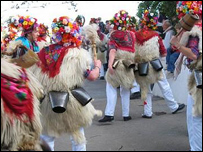

 The Romanian language is about to loose one of its dialects. The IstroRomanian is the least spoken of the four dialects of Romanian. Today, less then 500 people still speak the language in the Istrian region of Croatia. UNESCO has listed the IstroRomanian dialect in its Red Book of Endangered Languages as a seriously endangered language.
Today there are only two villages where the dialect is still spoken: in Žejane and in Šusnjevica.
Is it possible to save the IstroRomanian dialect?
The IstroRomanians: The Last Two Villages
The origin of the this small Romanian colony is lost in the mist of time and to this day researchers disagree on this subject.
Most likely, about 500 years ago a Romanian population fleeing the Turkish invasion sought refuge and settled in a few small villages north and south of Mount Učka, in the Istrian Peninsula.
Over time the IstroRomanian dialect came under the strong influence of Croatian spoken by the majority of the neighboring population.
Nowadays a Romanian may have a hard time understanding the dialect, but at the same time he or she may be surprised to recognized entire Romanian sentences in the language spoken in Žejane or Šusnjevica.
The IstroRomanian dialect can be easily recognized by changing the sound "n" with the sound "r". Thus, IstroRomanians would pronounce "bire" instead of "bine" or "spure" instead of "spune".
After Istria was occupied by Tito's troops and the region became part of Yugoslavia, many IstroRomanians chose to emigrate to the United States and Italy. The number of those left behind is worrisome.
Even from those that staid behind, many have moved from their native villages to the nearby cities in search of better jobs.
As a result the IstroRomanians have lost the possibility to study in Romanian or in their native dialect.
In the last few years the officials in Bucharest have done too little for the IstroRomanian community. All that Romania has done for them were empty promises and festive visits that had no concrete results.
And the Croatian authorities were by no means more helpful.
"We have funds and we would make them available for the IstroRomanian community if they were to organize themselves and ask for them, which has yet to be the case," said the president of the local Council of Kršan district which also includes the IstroRomanian village of Šusnjevica.
Until then and without any support, the language in the IstroRomanian villages will die out. There are no publications, there is not even a radio station and there are no classes in the dialect.
On the other hand, the IstroRomanians are lucky to have Mauro and his famous folk group, the "Žejanski zvončari" or "Žejane's Bell Ringers". The group is well known not only in Croatia but even abroad.
Dresses in sailors’ shirts with a heavy shepherd’s coat on top and a belt adorned with huge bells, the bell ringers move to the beat of a tribal dance. In the deafening sound of the bells, they go from house to house to bring good luck.
The members of the "Žejane's Bell Ringers" have done quite a bit to help maintain the IstroRomanian dialect. They have translated in the dialect, many of the regional songs and recorded a CD which is available for those who may wish to listen to their music.
Professor Petru Neiescu from the Linguistic Institute for Literary History from Cluj-Napoca, Romania believes that "this is not enough to save the dialect". He's been studying the dialect since 1962.
He is convinced that it is now too late to save the IstroRomanian dialect. We may only delay its extinction. Professor Neiescu also believes that in two or three generations everybody will be speaking only in Croatian.
Even so, on the streets of Šusnjevica I was able to find a little kid that, with the help of his father, was able to count to 10 in the dialect. However, he knew the numbers eight and nine only in Croatian.

Dialectul istro-român, o limbă pe cale de dispariție
Limba română este în mare pericol de a rămâne fără dialectul istro-român. Este vorba despre cel mai mic dintre cele patru dialecte ale limbii române. Acesta este vorbit în prezent de mai puțin de 500 de persoane în regiunea Istria din Croația. UNESCO a pus dialectul istro-român în cartea sa roșie privind limbile cu cel mai mare pericol de dispariție.
În prezent au mai rămas practic doar două sate unde încă se mai vorbește în dialect: la Jeiăni și la Sușnievița.
Este însă posibil ca dialectul istro-român să mai fie salvat?
Istro-românii: ultimele două sate
Originea micii colonii românești din Istria se pierde în negura istoriei. Specialiștii au în continuare controverse pe această temă.
Cel mai probabil acum aproximativ 500 de ani această populație românescă a fugit din calea turcilor și a format câteva mici localități la nord și la sud de Muntele Učka, în peninsula Istria.
De-a lungul timpului dialectul istro-român a fost puternic influențat de limba croată vorbită de populația majoritară.
Astăzi este mai greu de înțeles de un român din România, însa oricine poate recunoaște cu uimire fraze întregi românești în limba pe care o vorbesc cei din satul istrian Jeiăni sau la Sușnievița.
Dialectul istro-roman poate fi ușor recunoscut prin înlocuirea sunetului "n" cu "r". Istromânii pronunța spre exemplu "bire" în loc de "bine," "spure" în loc de "spune".
După preluarea Istriei de către partizanii lui Tito și integrarea ei în Iugoslavia, mulți dintre istro-români au migrat în Statele Unite și Italia. Numărul celor care au mai rămas s-a micșorat îngrijorător.
Dar și dintre aceștia unii au părăsit satele natale și și-au găsit locuri de muncă mai bune în orașe.
Pe de altă parte istro-românii au fost pierdut orice posibilitate de educare în limba română sau în dialect.
În ultimii ani, autoritățile de la București au facut prea puțin pentru istro-români. Promisiuni de ajutor și acțiuni de protocol pompoase rămase fără nici un fel de rezultat este tot ce a putut face România pentru istro-români.
Nici autoritățile croate nu au fost mai darnice cu istro-românii.
"Dăm fonduri minorităților și bineînțeles că le vom da și istro-românilor dacă se organizează și le cer, ceea ce nu e cazul istro-românilor," mi-a declarat șeful consiliului local al comunei Kârșan de care aparține și satul istro-român Sușnievița.
Până atunci în satele istro-române limba se pierde în lipsa oricărei acțiuni de sprijin. Lipsesc publicațiile, lipsește o stație de radio, lipsesc seminarii și cursuri.
În schimb istro-românii îl au pe Mauro și faimoasa lui formație folclorică locală "Žejanski zvončari" sau mai precis "Clopotarii din Jeiăni," cunoascută bine nu doar în Croația ci chiar și în lume.
Îmbracați cu tricouri de marinari, cojoace ciobănești pe deasupra și incinși la brâu cu centuri de care atârnă clopote mari, zvonciarii execută un fel de dans tribal. În sunetul asurzitor al clopotelor ei colindă din casă în casă pentru a aduce tuturor norocul.
Cei din formația "Clopotarilor din Jeiăni" au cea mai importantă contribuție practică la menținerea dialectului istro-român. Ei au tradus multe cântece din zonă în dialect și le-au imprimat pe un compact disc pe care îl oferă celor care doresc să îi asculte.
"Nu este însă suficient pentru a evita dispariția dialectului," crede profesorul Petru Neiescu de la Institutul de Lingvistică și Istorie Literară din Cluj, care studiază dialectul istro-român din 1962.
El este convins că dialectul istro-român nu mai poate fi salvat ci poate cel mult, întârziată dispariția lui. Profesorul Neiescu crede că în 2-3 generații nimeni nu va mai vorbi în dialect ci doar în limba croată.
și totuși la Susnievița, pe stradă, am găsit un copil care ajutat de tatăl său a putut să numere până la 10 în dialect chiar dacă cifrele 8 și 9 le spune în limba croată.
Vali Chifor
October 5, 2005
© 2005 BBC Romanian